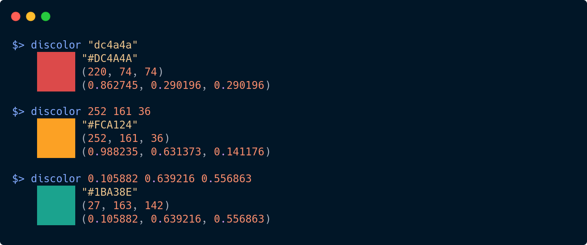

Lately I've been writing code to generate nice looking, colorful diagrams for my presentations and papers, and I've noticed I'm developing a new pet peeve. Online color pickers can be really helpful for picking nice color combinations, but they frequently don't list the RGB color code in the format I need for my program.
No it isn't a big deal to convert #A32845 to (163, 40, 69), but when I'm experimenting with combinations of seven or eight colors, it gets annoying fast. Not to mention converting integer RGB coordinates in the range [0, 255] to floating point coordinates in the range [0.0, 1.0].
Since I spend most of my day in the terminal, I wrote a command line script called discolor.py to do these conversions for me. Pass in a color in any of the three formats, and discolor will display that color along with the RGB components in all three formats.

Download the discolor.py script here.